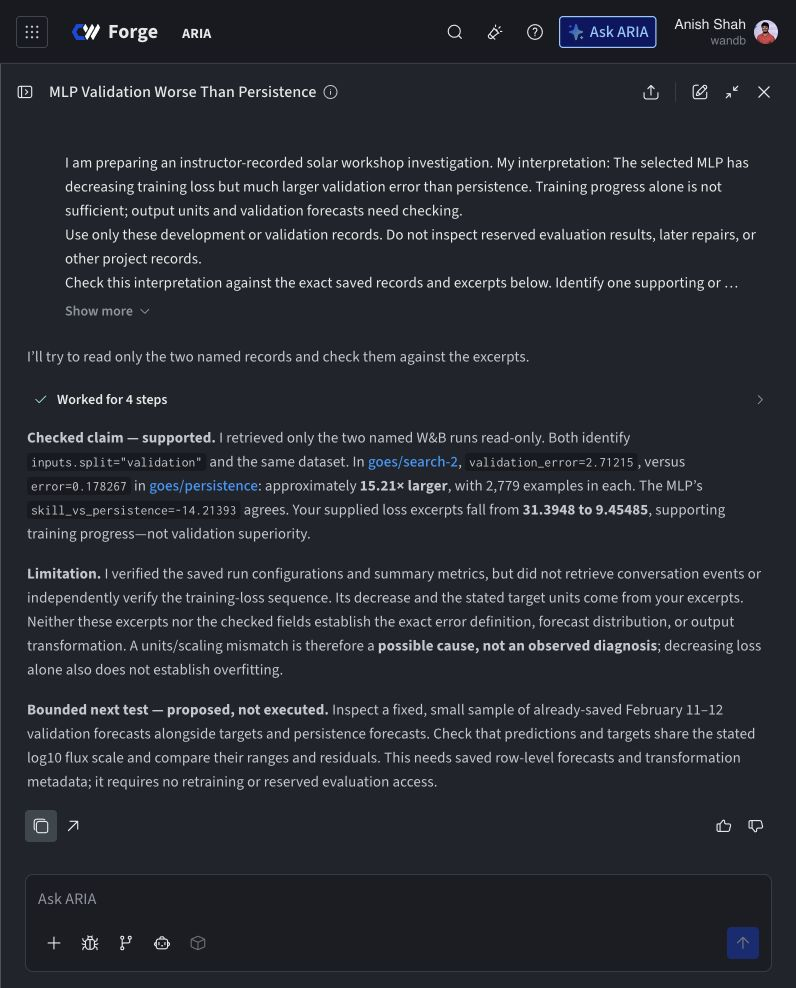
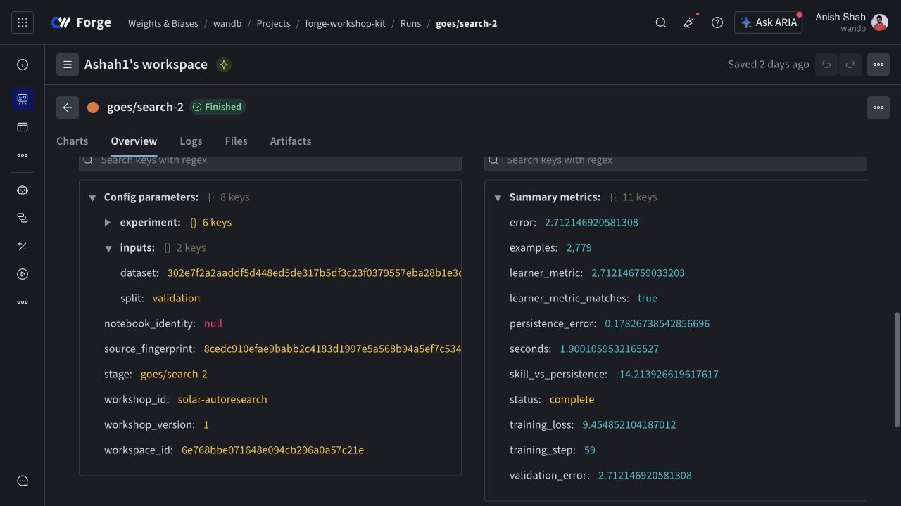

Solar Autoresearch / Investigate this result
Recorded instructor investigation. These are saved instructor records, not the outcome of an unexecuted participant edit.
Exact URLs and saved validation excerpts; no native attachment. ARIA retrieved the two named W&B run summaries read-only and checked validation metrics and dataset identity. Its discussion of loss history and units relied on supplied excerpts.
Open the actual ARIA conversation · Check the supplied source values offline
Exact submitted prompt
I am preparing an instructor-recorded solar workshop investigation. My interpretation: The selected MLP has decreasing training loss but much larger validation error than persistence. Training progress alone is not sufficient; output units and validation forecasts need checking.
Use only these development or validation records. Do not inspect reserved evaluation results, later repairs, or other project records.
Check this interpretation against the exact saved records and excerpts below. Identify one supporting or contradicting observation and cite the record, field, or event. Separate observations from possible causes; state missing evidence. Do not change code or settings, launch experiments, update project memory, or create automations. Analysis only.
Records: [{"stage_id":"ff57eba2f9e3704d9bee074e4b4c9bea","stage_name":"goes/search-2","trace_url":"https://forge.coreweave.com/agent-lens/wandb/forge-workshop-kit/conversations/ff57eba2f9e3704d9bee074e4b4c9bea","run_url":"https://forge.coreweave.com/wandb/wandb/forge-workshop-kit/runs/ff57eba2f9e3704d9bee074e4b4c9bea"},{"stage_id":"34be79df856314de9497c9715ad8da99","stage_name":"goes/persistence","trace_url":"https://forge.coreweave.com/agent-lens/wandb/forge-workshop-kit/conversations/34be79df856314de9497c9715ad8da99","run_url":"https://forge.coreweave.com/wandb/wandb/forge-workshop-kit/runs/34be79df856314de9497c9715ad8da99"}]
Saved evidence excerpts: {"selected_run":"goes/search-2","config":{"architecture":"mlp","width":16,"learning_rate":0.003,"steps":60,"seed":17,"batch_size":32},"metrics":{"error":2.7121469205813082,"persistence_error":0.17826738542856696,"skill_vs_persistence":-14.213926619617615,"examples":2779,"validation_error":2.7121469205813082,"seconds":1.9001059532165527,"learner_metric":2.712146759033203,"learner_metric_matches":true},"loss_first_3":[31.394834518432617,29.03706169128418,27.466228485107422],"loss_last_3":[10.946819305419922,9.598377227783203,9.454852104187012],"persistence_validation_metrics":{"error":0.17826738542856696,"persistence_error":0.17826738542856696,"skill_vs_persistence":0.0,"examples":2779},"units":"target log10 GOES XRS-B flux in W/m\u00b2; inputs standardized using training dates; validation February 11\u201312, 2014"}
Give a concise response with one checked claim, one limitation, and one bounded next test. If you cannot read a linked record, say so and base any interpretation explicitly on the supplied excerpt.
Please retrieve the named records read-only if the available tools support it. If they do not, state that limitation. Keep the response under 220 words.Actual ARIA response
Instructor citation check
supported: The selected GOES validation model error exceeds the persistence error on the same 2,779 examples.
The saved goes/search-2 metrics contain validation_error=2.7121469205813082 and examples=2779. Saved goes/persistence has error=0.17826738542856696 and examples=2779. These match the native summary values quoted by ARIA. A scaling explanation remains a hypothesis; no training change was run.
Open the checked record in Forge

